3. РЕЗОНАНС ТОКОВ
Резонанс токов (РТ) возникает в параллельном колебательном контуре (рис. 8.5), условием которого является равенство нулю входной реактивной проводимости
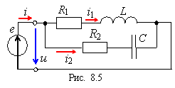
bPT = bL(PT) – bC(PT) = 0 или
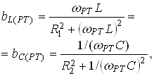
откуда резонансная угловая частота
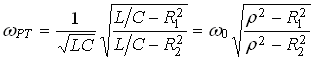,
где 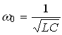- резонансная частота контура без потерь (R1 = R2 = 0);
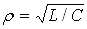- характеристическое сопротивление контура.
Резонансные свойства цепи с двумя ветвями R1L и R2C (см. рис. 8.5) удобно изучать применительно к её эквивалентной схеме замещения с тремя параллельно соединёнными ветвями с параметрами g, bL и bC (рис. 8.6, а), равными
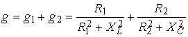 ;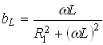 ;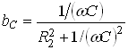.
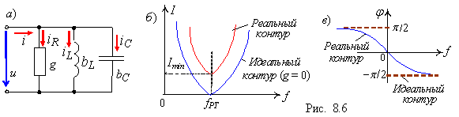
Тогда добротность параллельного колебательного контура
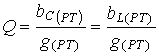.
Практически добротность Q показывает кратность тока IС в ветви с конденсатором (без резистора R2, см. рис. 8.5) при режиме РТ над током IРТ на зажимах контура, т. е.
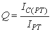.
Ток I при РТ имеет минимальное значение, т. к. полная проводимость контура в этом режиме YРТ = Ymin, а сопротивление контура 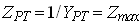:
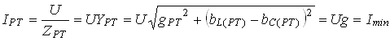.
Амплитудно-частотная характеристика тока I(f) и фазо-частотная φ(f) характеристика реального и идеального контуров приведены на рис. 8.6, б и в.
Векторные диаграммы токов ветвей и тока на входе реального (а) и идеального (в) колебательных контуров для режима РТ представлены на рис. 8.6, б и г; ток I1 в первой ветви отстаёт от напряжения по фазе на угол φ1, а ток I2 во второй ветви его опережает по фазе на угол φ2 (рис. 8.6, б). 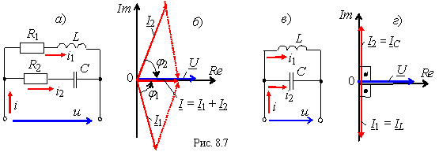
Ток I на входе контура, как правило, меньше токов I1 и I2 ветвей при режиме РТ, а для идеального контура ток IРТ = 0 (рис. 8.7, г). При подключении приёмника Rн параллельно конденсатору (при , см. рис. 8.5) добротность нагруженного контура снижается тем сильнее, чем меньше Rн: 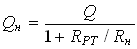, где 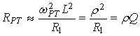 .
Полосу пропускания контура при небольшой расстройке определяют по формуле
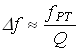или 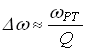.